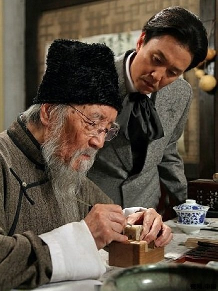齐白石（1863─1957），原名纯芝，字渭青，号兰亭。后改名璜，字濒生，号白石、白石山翁、老萍、饿叟、借山吟馆主者、寄萍堂上老人、三百石印富翁等。湖南湘潭人，近现代中国绘画大师，世界文化名人。早年曾为木工，后以卖画为生，五十七岁后定居北京。擅画花鸟、虫鱼、山水、人物，衰年变法，笔墨雄浑滋润，色彩浓艳明快，造型简练生动，意境淳厚朴实。所作鱼虾虫蟹，天趣横生。其书工篆隶，取法秦汉碑版，行书饶古拙之趣，篆刻自成一家，亦能诗文。曾任中央美术学院名誉教授、中国美术家协会主席等职。
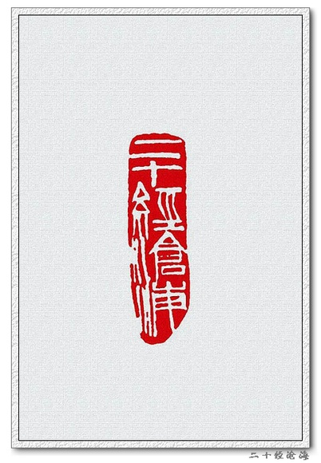二十经沧海
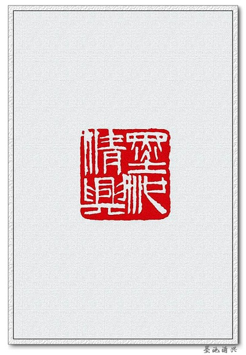墨池清兴

杏语馆主

霞中厂｜毅斋
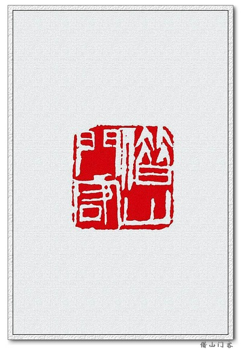借山门客

百树梨花主人

夺得天工

吾画遍行天下伪造居多

品外｜南皮张氏柳风堂石墨
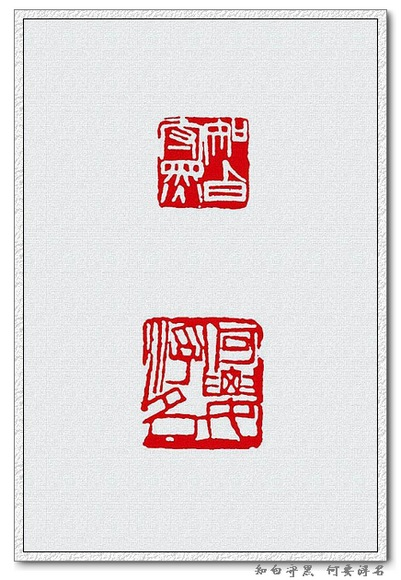知白守黑｜何要浮名
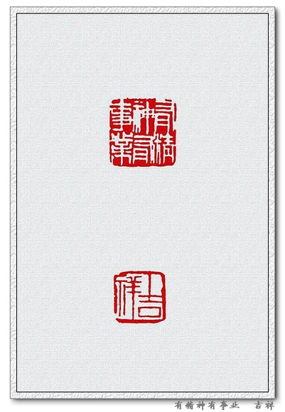有精神有事业｜吉祥

铁夫珍藏
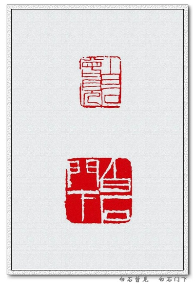白石曾见｜白石门下

微风闲坐古松｜简斋

寂寞之道

高楼风雨感斯文

不可居无竹｜不贪为宝
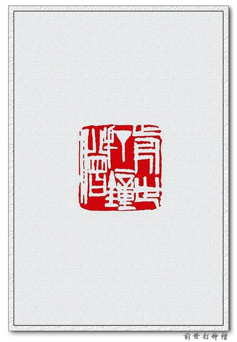前世打钟僧
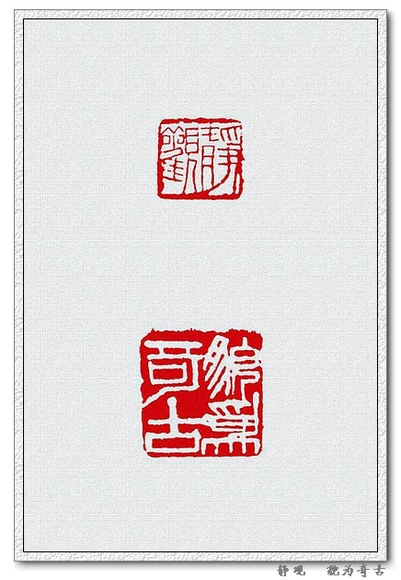静观｜貌为奇古
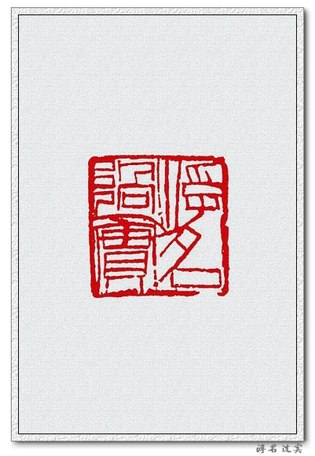浮名过实
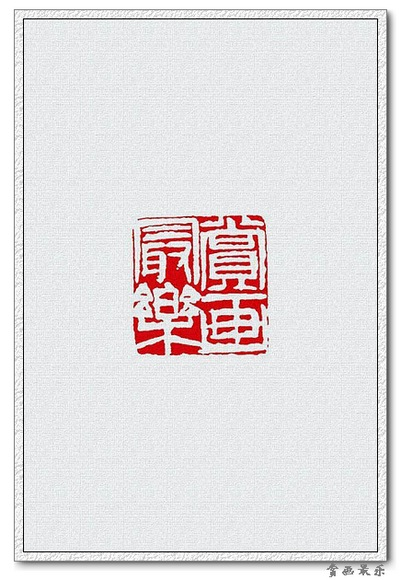赏画最乐

犹有梅花是古人
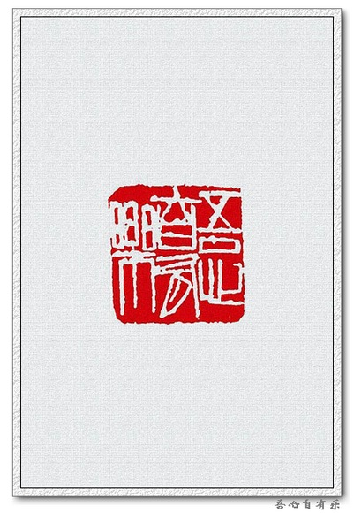吾心自有乐
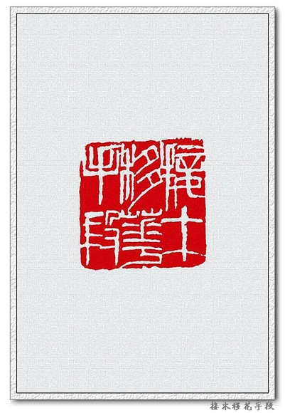接木移花手段

莲花山下是吾家
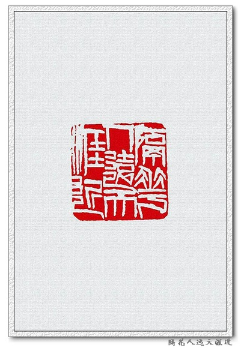隔花人远天涯近

云盖精舍藏书
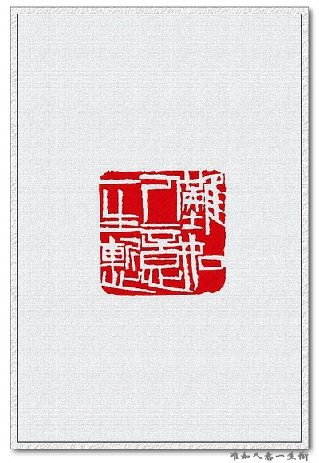难如人意一生惭

风前月下清吟

视道如花

乐石室｜乐此不疲
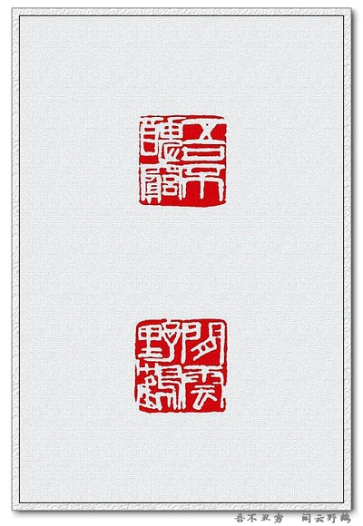吾不丑穷｜闲云野鹤

湘潭人也

一年容易又秋风｜一夜吹香过石桥
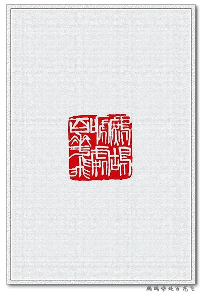鹧鸪啼处百花飞
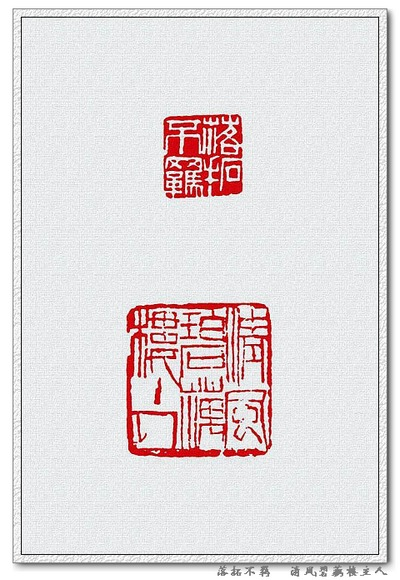落拓不羁｜清风碧藕楼主人
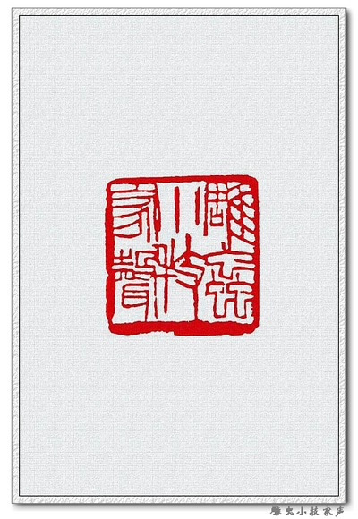雕虫小技家声
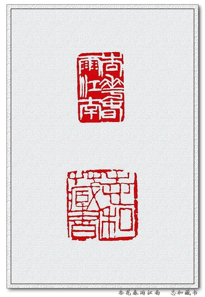
杏花春雨江南｜志和藏书
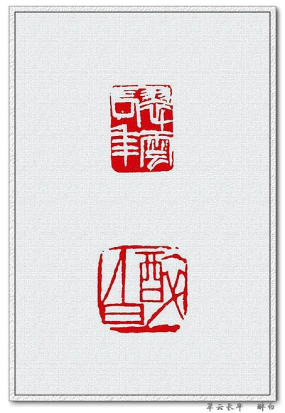翠云长年｜醉白

千石印室｜大匠之门
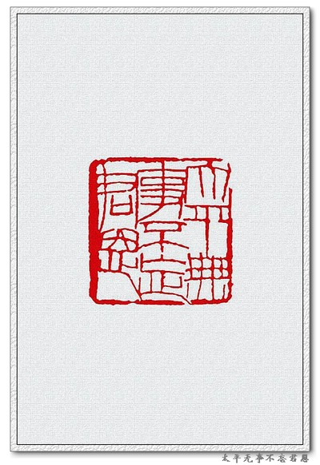太平无事不忘君恩

患难见交情

天涯亭过客
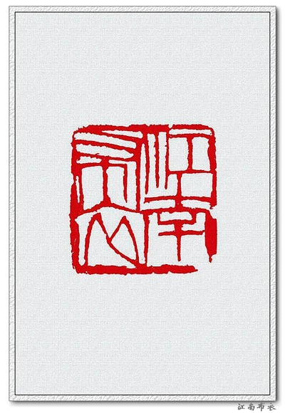江南布衣
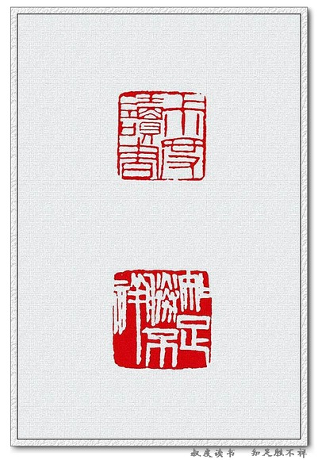叔度读书｜知足胜不祥
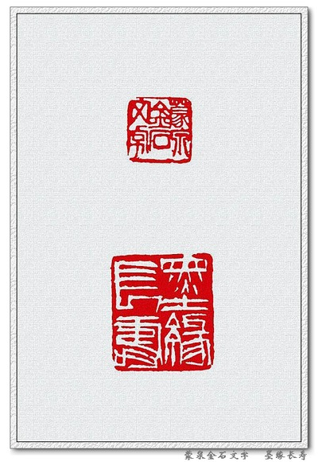蒙泉金石文字｜墨缘长寿
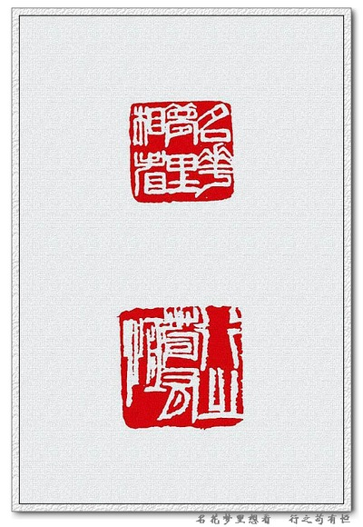名花梦里想看 ｜行之苟有恒

见贤思齐
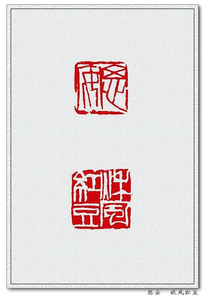思安｜秋风红豆
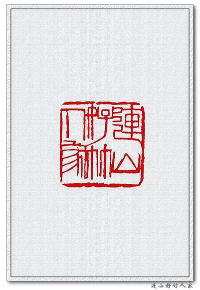连山好竹人家
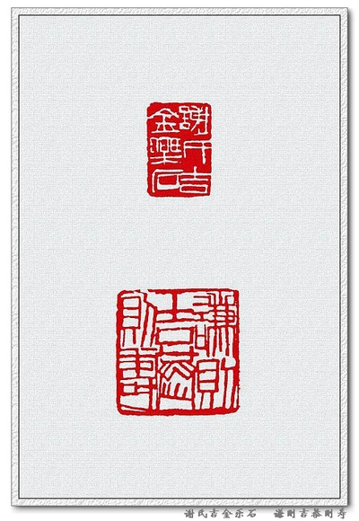谢氏吉金乐石｜谦则吉恭则寿
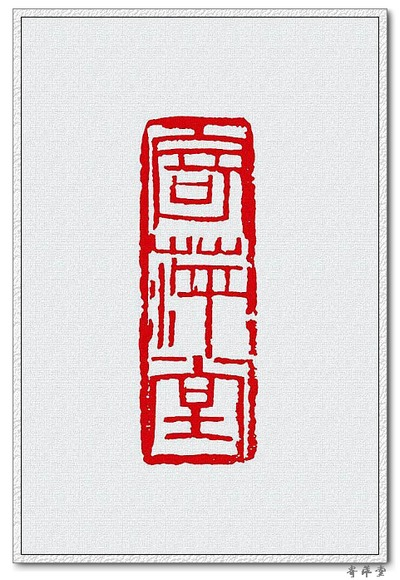寄萍堂

大器斋
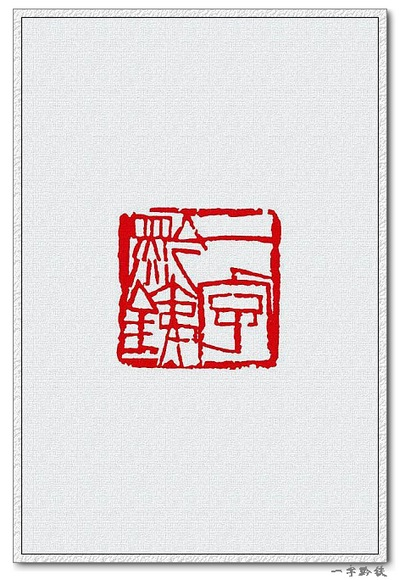一字黔铁

流俗之所轻也
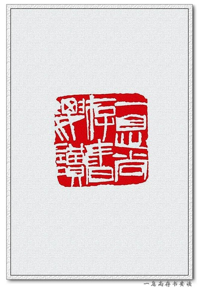一息尚存书要读

韫山长寿

中立不倚
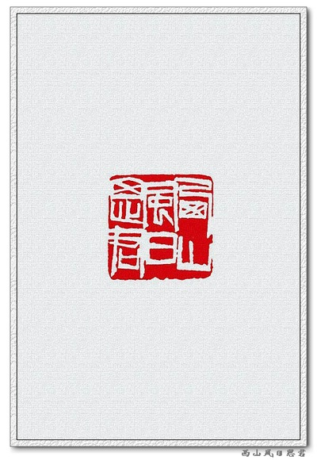西山风日思君

淡泊宁静｜清白家风

白石篆字｜西山如笑笑我邪
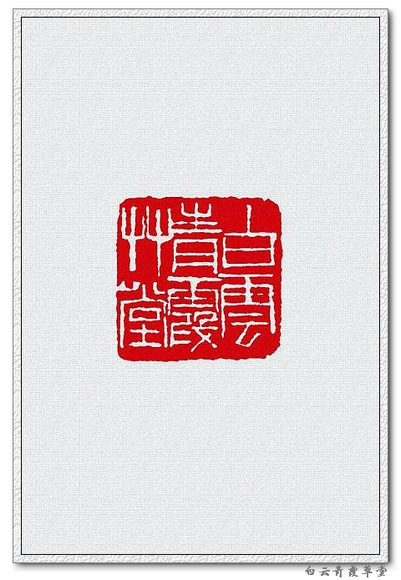白云青霞草堂
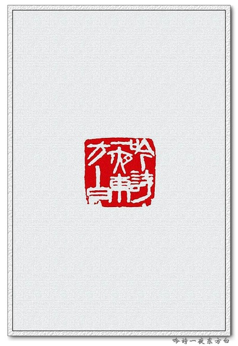吟诗一夜东方白
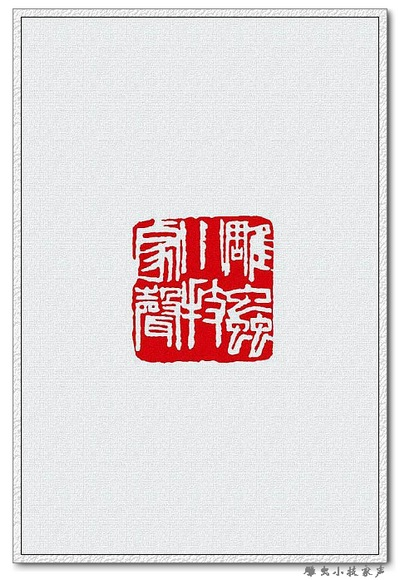雕虫小技家声

家在清风雅雨间
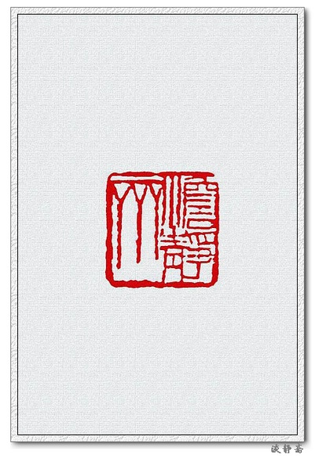淡静斋